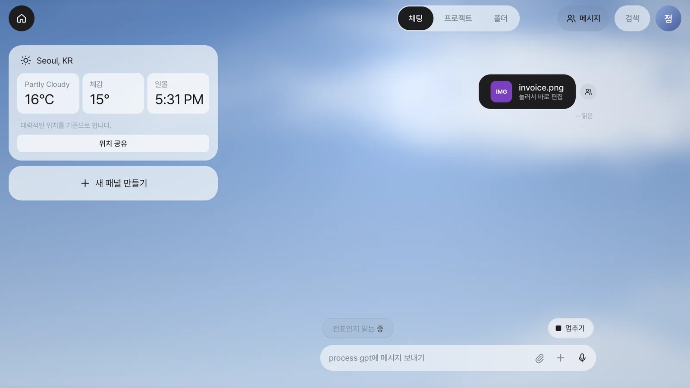
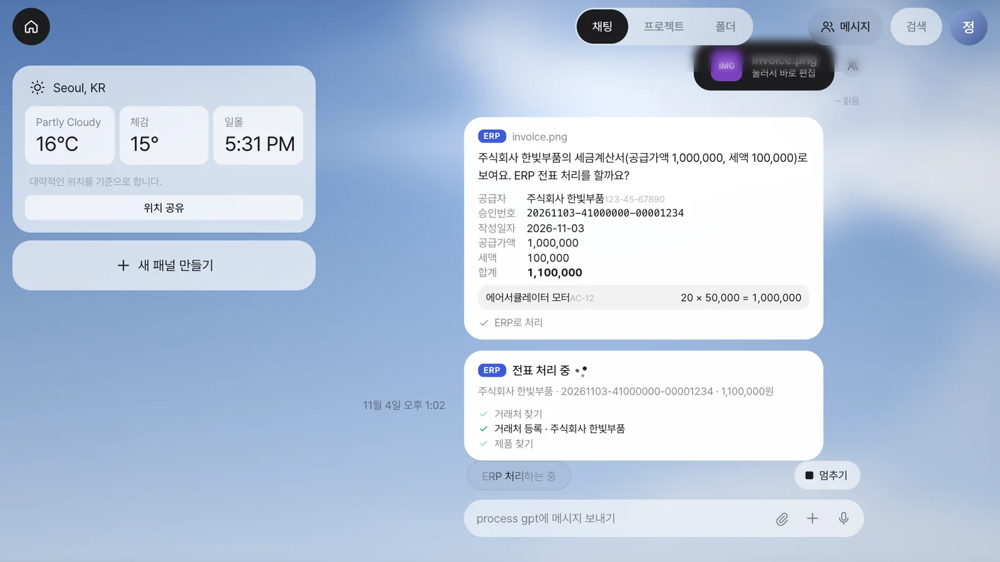
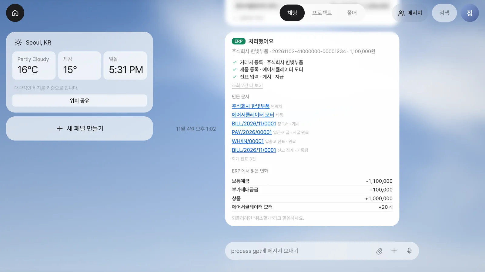
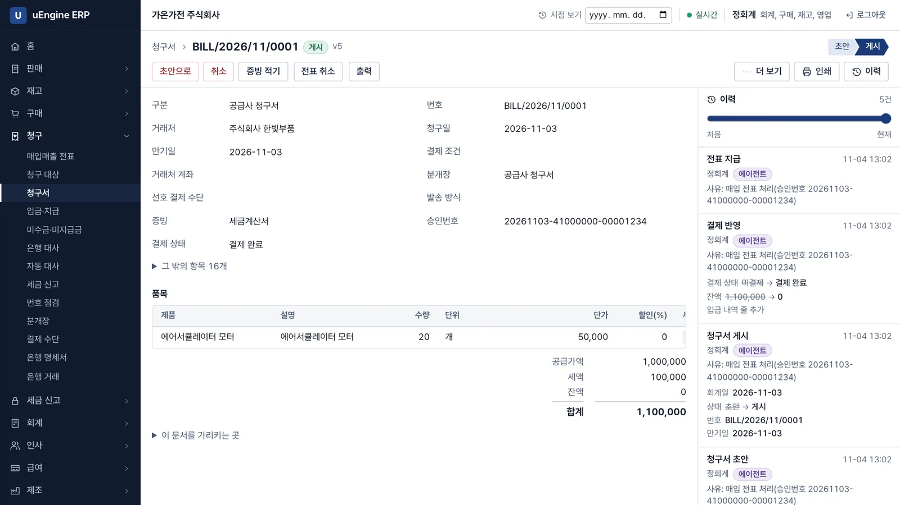
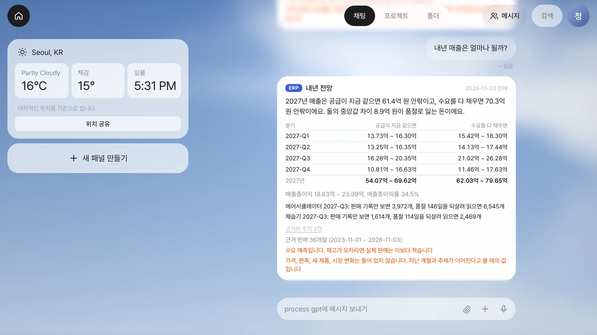
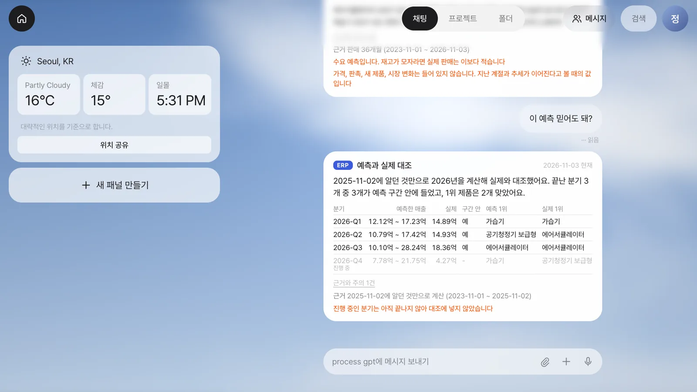
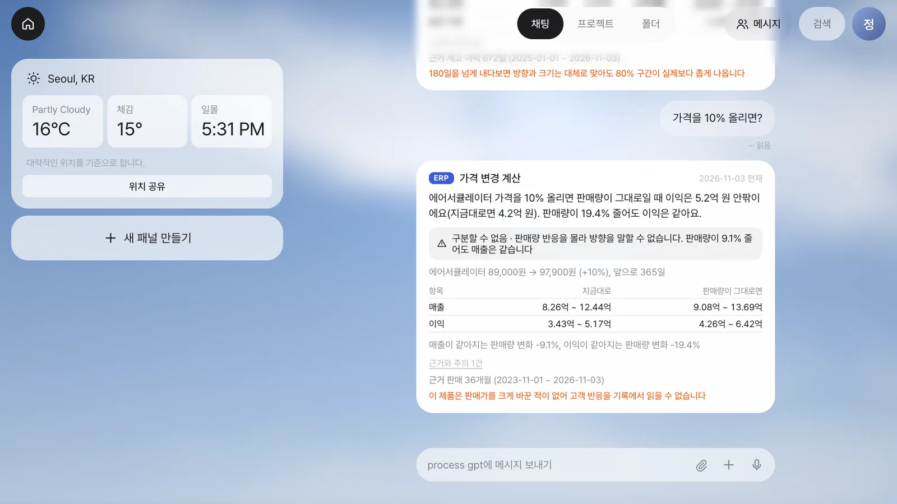

롱러닝 에이전틱 AI 시대를 위한 ERP 아키텍처 대전환: 왜 이벤트 소싱과 사가 롤백인가?

1. 챗봇을 넘어 '업무를 실행하는' 롱러닝 에이전틱 AI의 등장
기업이 AI에 맡기려는 일이 달라지고 있습니다. 질문에 답하고 보고서를 요약하는 데서 그치지 않습니다. 원자재 부족을 찾아 대체 공급사를 알아보고, 구매 승인을 올리고, 입고와 지급까지 처리하기를 기대합니다. 에이전트가 기업 시스템에 들어가 실제 업무를 실행하는 시대입니다.
공급사의 답변과 결재, 입고를 기다리는 데는 수 시간에서 수일이 걸립니다. 에이전트는 ERP, SCM, WMS, MES를 넘나들며 앞선 결과를 읽고 다음 도구를 고릅니다. 이것이 롱러닝 에이전틱 AI의 업무입니다.
기다리는 동안에도 다른 직원이 자재를 예약하고 창고가 출고를 처리합니다. 에이전트의 판단이 틀리거나 협력사 재고가 소진되고, 관리자가 구매를 반려할 수도 있습니다. 처음 계획대로 끝낼 수 있다는 전제는 쉽게 깨집니다.
“처리에 실패했습니다”라는 답변만으로는 부족합니다. 이미 예약한 자재와 발행한 발주서, 반영된 장부를 어떻게 할 것인지 답해야 합니다.
에이전트에게 실행 권한을 주기 전에, 이미 실행한 일을 어떻게 안전하게 되돌릴지 확인하세요.
2. MCP는 왜 등장했고 어떻게 동작하는가
시스템마다 맞춤형 연동을 만들면 에이전트의 도구가 늘수록 유지보수 부담이 커집니다. MCP는 AI 애플리케이션과 외부 도구의 공통 연결 규약입니다. 공식 문서는 이를 “Think of MCP like a USB-C port for AI applications.”라고 설명합니다. AI 애플리케이션을 위한 USB-C 포트라는 비유입니다.
에이전트의 업무는 다음 흐름으로 진행됩니다.
- 인식 및 조회(Read): 부품 재고와 최근 납품 단가를 읽고 현재 상황을 파악합니다.
- 판단 및 계획(Plan): 목표와 제약을 고려해 필요한 도구와 호출 순서를 정합니다.
- 행동 및 실행(Exec): 자재를 예약하고 발주서를 만들고 배송을 요청합니다.
자재 예약과 발주서 생성 후 승인이 거절되면 어떻게 하나요? 마지막 오류를 설명하는 것만으로 앞선 작업의 효과가 정리되지는 않습니다.
MCP 도구 스펙의 2025-06-18 버전은 도구의 트랜잭션, 롤백, 보상을 정의하지 않습니다. 도구 주석도 신뢰할 수 있는 서버에서 온 것이 아니라면 신뢰해서는 안 된다고 명시합니다. 도구 설명만으로 안전성을 인정해서는 안 됩니다.
MCP는 호출 규약이고 되돌리기는 정의하지 않으므로, 도구 뒤의 시스템이 맡아야 합니다. MCP의 결함이 아니라 역할 구분입니다.
3. 전통적인 덮어쓰기(CRUD) ERP가 에이전트 환경에서 무너지는 이유
ERP는 업무의 기준 기록을 관리하는 SoR(System of Record)입니다. 에이전트는 현재 숫자뿐 아니라 자신이 만든 변화와 이유를 읽어야 합니다. 별도 이력이 부족한 덮어쓰기 구조에는 세 가지 문제가 있습니다.
현재 값만으로는 에이전트의 일을 구별할 수 없습니다
재고가 1,000개에서 800개로 바뀌었다고 가정합니다. 현재 재고 800개만 읽어서는 어떤 주문 때문에 200개가 줄었는지 알 수 없습니다. 예약인지 출고인지, 에이전트가 한 일인지 직원이 한 일인지도 현재 숫자에는 담겨 있지 않습니다.
“그때 처리한 것 취소해 줘”라는 요청에 대화 속 추측으로 장부를 바꿔서는 안 됩니다. 실제 실행 내역에서 대상과 수량, 연결 문서를 확인해야 합니다. CRUD 시스템도 별도 이력을 갖추면 가능합니다. 문제는 최신 상태만 원본으로 삼고 실행 맥락을 부가 정보로 취급할 때입니다.
에이전트가 기다리는 동안 다른 업무가 끼어듭니다
월요일 오전에 자재 예약을 마치고 화요일 오후에 결재가 반려될 수 있습니다. 커밋이 끝난 트랜잭션은 ROLLBACK으로 취소할 수 없습니다. DB가 제공하는 트랜잭션 취소와 이미 끝난 업무를 다음 날 철회하는 것은 다릅니다.
과거 재고 스냅샷을 복원하면 다른 직원의 예약과 출고까지 덮어쓰는 분실 갱신이 발생할 수 있습니다. 에이전트는 자신이 만든 예약의 효과만 취소해야 합니다.
실수를 지우면 수습한 근거도 사라집니다
잘못 게시한 전표를 지우면 에이전트의 실행과 취소 경위를 설명하기 어려워집니다. 책임자는 최종 숫자뿐 아니라 누가 왜 실행하고 어떻게 수습했는지 확인할 수 있어야 합니다.
미국 FDA의 21 CFR 11.10(e)는 적용 대상 기록에 대해 작성·수정·삭제 행위의 날짜와 시각을 독립적으로 남기는 안전한 감사 추적을 요구하며, 변경이 이전 기록을 가려서는 안 된다고 규정합니다. 이벤트 소싱은 이런 요구와 잘 맞습니다. 다만 이 규정이 특정 저장 방식을 지정하거나 이벤트 소싱의 도입만으로 준수를 보장하는 것은 아닙니다. 에이전트의 행동 이력을 관리하는 운영 정책과 접근 통제도 함께 필요합니다.
4. 해결책: 이벤트 소싱과 사가 롤백의 결합
이벤트 소싱: 에이전트가 한 일을 지우지 않는 디지털 장부
이벤트 소싱은 현재 값만 저장하는 대신 업무에서 일어난 사건을 원본으로 기록합니다. 통장에 입금과 출금 내역을 차례로 남기고 잔고를 계산하듯, 재고와 장부의 현재 상태를 사건의 누적 결과로 만듭니다.
에이전트의 예약과 발주, 승인 거절은 다음과 같은 사건으로 남깁니다. 설명을 위한 예입니다.
StockReservedByAgent: 부품 200개 예약
PurchaseOrderCreated: 구매 발주서 작성
ManagerApprovalRejected: 관리자 승인 거절Pat Helland는 「Immutability Changes Everything」에서 “The truth is the log. The database is a cache of a subset of the log.”라고 설명합니다. 진실은 로그이고, 데이터베이스는 그 일부를 담은 캐시라는 관점입니다. 같은 글의 “회계사는 지우개를 쓰지 않는다”는 비유도 이 맥락에서 읽을 수 있습니다. 에이전트의 실수를 수습할 때도 원래 기록을 지우는 대신 수정한 사실을 더해야 합니다.
사가 패턴: 없던 일로 하지 않고 되돌리는 행동을 합니다
이벤트 소싱이 무엇을 했는지 남긴다면, 사가는 중간에 멈춘 업무의 효과를 어떻게 정리할지 다룹니다. 예약을 철회하고 발주를 취소하는 보상 트랜잭션을 실행합니다. 여기서 말하는 사가 롤백은 이미 커밋한 DB 트랜잭션의 ROLLBACK이 아니라 업무 의미에 맞는 보상입니다.
Garcia-Molina와 Salem의 「Sagas」(1987)는 보상을 업무 의미에서 앞선 행위의 효과를 취소하는 것으로 설명합니다. 반드시 그 행위를 시작하기 전의 DB 상태로 돌아가는 것은 아닙니다. 항공 예약을 취소할 때는 예약 수에서 하나를 빼야 합니다. 예약 당시의 좌석 수를 그대로 복원하면 그사이에 들어온 다른 예약을 무시하게 됩니다. 에이전트가 자재 예약을 취소할 때도 같은 원칙이 적용됩니다.
논문의 보장 구조는 T1…Tn 전부 실행, 또는 T1…Tj 실행 뒤 Cj…C1 보상입니다. 긴 업무 전체를 잠그는 방식이 아니므로 보상 조건과 재시도, 사람의 예외 처리도 설계해야 합니다.
| 비교 항목 | 현재 값과 과거 스냅샷에 의존하는 되돌리기 | 이벤트 소싱 + 사가 보상 |
|---|---|---|
| 에이전트의 실행 근거 | 별도 이력에서 대상과 조건을 찾아야 합니다 | 원본 이벤트에서 실행 당시 사실을 읽습니다 |
| 취소 방식 | 이전 값 복원 시 중간 변경을 덮어쓸 위험이 있습니다 | 자기 업무의 효과를 상쇄하는 사건을 추가합니다 |
| 다른 업무와의 관계 | 스냅샷만으로는 후속 작업을 구별하기 어렵습니다 | 인과관계와 버전을 확인해 보상 여부를 판단합니다 |
| 책임자의 확인 | 원래 실행과 취소 기록을 별도로 대조합니다 | 실행과 보상을 연결해 경위를 확인합니다 |
5. 왜 이벤트 소싱이 구현되어야 사가 롤백이 제대로 되는가
“기존 CRUD ERP 위에 사가 오케스트레이터만 얹으면 되지 않나요?” 가능합니다. 사가는 원래 1987년에 일반 DB 위에서 고안됐고, 덮어쓰기 ERP 위에도 만들 수 있습니다. 이벤트 소싱만이 사가를 구현할 수 있는 저장 방식이라는 주장은 맞지 않습니다.
다만 에이전트가 주된 실행자가 되면 설계의 출발점이 달라집니다.
고전적인 사가는 개발자가 단계와 보상을 미리 설계합니다. 에이전트의 일은 미리 설계되지 않습니다.
고정 워크플로는 단계와 실패 시 보상을 미리 정합니다. 에이전트는 상황에 따라 도구를 고릅니다. 이번에는 기존 거래처를 쓰지만 다음에는 거래처부터 만듭니다. 도구별 보상 규칙은 미리 정의해도 실제 조합과 순서, 실행 이유는 끝난 뒤 기록으로 확인해야 합니다.
계획이 달라져도 실행의 증거는 남아야 합니다
에이전트가 환율과 할인율을 적용해 단가 1,250원에 원자재 100개를 예약했다고 가정합니다. 취소에 필요한 것은 지금의 단가가 아니라 당시 적용한 조건과 실제 예약 수량입니다. 그 예약이 어떤 발주와 연결됐고 이후 입고나 지급으로 이어졌는지도 알아야 합니다.
덮어쓰기 ERP 위에서 이를 구현하려면 변경 이력, 호출 묶음 번호, 버전, 재시도 키, 인과 추적을 따로 쌓아야 합니다. 그렇게 쌓다 보면 결국 이벤트 로그를 다시 만드는 셈이 됩니다. 덧붙인 기록은 실제 변경과 따로 관리되는 과정에서 빠지거나 어긋날 수도 있습니다. 이벤트 소싱에서는 그 기록 자체가 원본입니다. 현재 화면의 숫자와 되돌리기의 근거가 같은 업무 사실에서 출발합니다.
재시도와 보상도 시스템의 계약이어야 합니다
응답을 받지 못한 에이전트는 같은 취소를 다시 요청할 수 있습니다. 재시도 키를 따로 설계하지 않으면 100개 취소 요청이 중복 실행되어 200개가 취소될 수 있습니다. 이벤트 소싱을 쓴다고 중복 실행이 저절로 막히지는 않습니다. 사가 번호와 작업 식별자, 버전 검사, 중복 요청을 걸러 내는 처리가 함께 있어야 합니다.
DB 기록은 성공했는데 메시지 발행이 실패하는 이중 쓰기 문제는 트랜잭셔널 아웃박스로 풀 수 있으며, 이벤트 소싱만의 이득은 아닙니다. 중요한 것은 에이전트의 요청부터 후속 모듈의 처리까지 무엇이 끝났고 무엇을 다시 해야 하는지 확인 가능한 구조입니다.
Oracle의 「When AI Agents Meet Enterprise Reality」(2026)는 지속 실행이 인프라 장애를 견디게 하고, 보상 패턴이 부분적으로 발생한 업무 효과를 수습하게 하며, 신뢰할 수 있는 기업 자동화에 둘 다 필요하다고 설명합니다. 이 글에서도 업무 보상 로직은 개발자가 미리 정의합니다. 에이전트가 계획한다고 보상 규칙까지 즉흥적으로 만들어도 된다는 뜻은 아닙니다.
Zavora 논문도 에이전트를 주된 운영자로 두고, 중요한 행위를 약속·의무·증빙·정산의 불변 이벤트로 저장하는 참조 아키텍처를 제안합니다. 검증된 운영 성과로 받아들여서는 안 됩니다. 에이전트의 실행을 어떤 기록과 통제 위에 둘 것인지에 관한 설계 제안입니다.
6. 지우지 않은 원장으로 과거를 읽고 실행 전에 돌려 봅니다
에이전트가 ERP에서 일하려면 실행과 취소만큼 실행 전에 물어볼 곳이 필요합니다. “내년 어느 분기에 뭐가 많이 팔리나”, “매출은 얼마나 되나”, “이걸 바꾸면 어떻게 되나”에는 현재 값만으로 답할 수 없습니다.
지금의 숫자에 없는 과거를 읽습니다
지난여름 제습기 재고가 며칠 동안 0이었는지는 지금의 재고 숫자에 남아 있지 않습니다. 판매가 적었던 이유가 품절인지 낮은 수요인지 구별하지 못하면 예측도 낮아지고, 적게 발주해 다시 품절이 납니다. 원장에서는 그날의 재고를 다시 계산합니다. 덮어쓰기 시스템도 별도 이력이나 데이터 창고로 비슷한 일을 할 수 있습니다. 차이는 그 기록이 원본이냐 부가물이냐입니다.
에이전트는 어느 시점에 시스템이 무엇을 알았는지도 다시 읽습니다. 1년 전 시점의 원장으로 같은 예측을 하고 이후 실제와 대조하면 자기 회사 기록으로 예측을 검증합니다. 나중에 알게 된 사실이 과거의 예측에 섞이지 않습니다.
what-if는 원장에 쓰지 않고 돌립니다
에이전트는 같은 수요와 같은 납기를 놓고 원안과 변경안을 나란히 돌려 차이를 구간으로 제시합니다. 구간이 0을 포함하면 “구분할 수 없음”이라고 답합니다. 원장에는 아무것도 남지 않으며, 근거가 모자라면 숫자 대신 무엇이 모자란지 말합니다.
숫자는 LLM이 짓지 않습니다. LLM은 질문을 어떤 모델에 어떤 입력을 줄지로 옮깁니다. ERP 화면과 같은 모델이 원장에서 읽은 사실로 계산하므로 사람과 에이전트가 받는 답이 달라지지 않습니다. 권한도 같아서 읽을 수 없는 문서로 계산한 답은 받지 못합니다.
가상 회사의 시험으로 확인한 범위입니다
생성기로 만든 가상 회사 60곳의 2025년 11월 초까지 원장으로 2026년 네 분기를 예측하고 실제와 대조했습니다. 이 가상 회사 시험에서 분기 매출 오차 중앙값은 6.6%, 80% 구간이 실제 매출을 담은 비율은 91%입니다. 분기 1위 제품이 실제 수요 1위인 비율은 75%입니다.
what-if로 1년 앞까지 내다보는 경우도 별도로 시험했습니다. 가상 회사 30곳에서 여름 상품 발주량을 2배로 늘리거나 상품을 단종하거나 납기를 1.6배로 늘렸을 때, 변화 방향은 모두 맞았고 변화 크기의 오차는 10~13.5%였습니다. 다만 80% 구간이 실제 결과를 담은 비율은 53~80%로 표시된 수준보다 낮았습니다. 이에 따라 180일을 넘게 내다보는 경우에는 예측 구간이 좁게 나온다고 모델이 경고합니다.
같은 가상 회사 시험에서 여름 분기의 1위 적중률은 98%, 두 제품이 비슷한 4분기는 47%입니다. 모델이 제시한 1위 가능성도 각각 98%, 44%로, 모를 때는 불확실하다고 답합니다.
품절이 잦은 가상 회사에서 판매 기록을 그대로 읽으면 여름 수요 오차가 32%이고 수요를 30% 낮게 읽었지만, 재고 이력을 반영하면 오차는 9.5%였습니다. 판매 공백을 품절로 보고 빼도 비슷하므로 재고 이력만이 길은 아닙니다. 다만 하나는 추정이고 하나는 기록입니다. 생성기와 추정기가 가정을 공유하므로 실제 회사의 결과는 이보다 나쁠 것으로 봐야 합니다.
기록 밖의 반응은 가정으로 남깁니다
가격을 바꾸면 고객이 얼마나 떠나는지는 기록에서 읽지 않습니다. “판매가를 10% 올리면?”에는 판매량이 9.1% 줄어도 매출이 같다는 손익 분기만 말하고 방향은 말하지 않습니다. 가정을 주면 가정이라고 밝히고 계산합니다. 새 제품, 판촉, 시장 변화는 들어 있지 않습니다.
사람이 묻고 에이전트가 답하는 데까지 구현했습니다. 에이전트가 스스로 시뮬레이션해 결정까지 내리는 것은 다음 단계입니다.
먼저 돌려 보고, 실행하고, 잘못되면 되돌립니다. 세 가지가 모두 같은 원장에서 나옵니다.
7. 실제 사례: 우리가 만든 에이전트와 ERP의 실행과 되돌리기
uEngine ERP 앱과 소스는 공개했고, Process GPT Lite 연동은 시험을 마쳤으며 곧 공개합니다.
우리가 직접 만든 이벤트 소싱 기반 uEngine ERP와 에이전트 Process GPT Lite를 MCP로 연결해 돌렸습니다. 가상 회사 가온가전의 경리 담당자 정회계가 파일 입력부터 실행과 취소까지 진행합니다.
시나리오: 세금계산서를 올리기만 하면
전체 흐름 영상: 올리기, 처리, 말로 취소, 되돌리지 않는 경우
1. 올리기: 말없이 파일만 올립니다. 정회계는 Process GPT Lite의 채팅에 세금계산서 파일만 첨부합니다. 에이전트는 파일에서 업무를 시작할 단서를 읽습니다.

말없이 세금계산서 파일만 올립니다
2. 묻기: 읽었다고 바로 실행하지 않습니다. Lite는 공급자 주식회사 한빛부품, 승인번호 20261103-41000000-00001234, 금액 1,100,000원을 확인하고 “ERP로 처리할까요?”라고 묻습니다. 전표로 처리할 문서가 아니면 처리 제안을 하지 않거나, 금액이 맞지 않으면 어디가 이상한지 알려 줍니다.

Lite가 파일을 읽어 ERP로 처리할지 묻습니다
3. 업무 흐름: 수락하면 여러 모듈의 일이 이어집니다. 에이전트는 MCP로 거래처와 제품을 찾아 없으면 등록하고, 전표 입력 명령 하나로 전표 게시와 지급까지 처리합니다. 이 과정의 모든 호출은 서버가 붙이는 사가 번호 dbf3657a…로 묶입니다. 입고, 회계 전표, 부가세 신고 집계는 그 이벤트를 듣는 재고·회계·세금 모듈이 만듭니다. 파생된 결과까지 추적해 취소 범위를 정합니다.

수락하면 MCP로 업무가 진행되고 단계가 보입니다
4. 결과: 확인한 사실만 알립니다. 첫 요청이 성공했다고 전체 업무의 완료를 선언하지 않습니다. 이벤트를 받아 처리하는 구독자가 끝날 때까지 기다린 뒤, 전표 BILL/2026/11/0001, 지급 PAY/2026/00001 등 확인된 결과를 알려 줍니다. ERP 화면에서도 같은 결과를 확인합니다.

구독자까지 끝난 것을 확인한 뒤 결과를 알립니다

uEngine ERP에서 본 같은 결과
5. 말로 취소: “방금 그거 취소할게”라고 요청합니다. 사용자는 취소할 업무를 말하고, 에이전트는 그 요청을 사가 번호에 연결합니다. 보상은 LLM에게 맡기지 않습니다. 서버가 실행 범위와 연결된 결과를 읽고 보상 가능한지 검사합니다. 서버가 직접 실행하는 보상은 지급 취소와 대변 메모 게시 두 가지이며, 원래 실행의 역순으로 처리합니다. 재고 반품, 역분개, 신고 집계는 구독자가 그 이벤트를 듣고 따라 만듭니다. 평균 원가 제품은 입고 때 바뀐 단가도 함께 돌아갑니다. 공급자에게 수정세금계산서를 요청해야 한다는 경고도 알려 줍니다. ERP 내부의 보상이 외부 세금 문서까지 고쳐 주는 것은 아니기 때문입니다.

"방금 그거 취소할게" 한마디로 보상이 실행되고 순변화가 0으로 나옵니다
6. 원장: 에이전트의 말이 아니라 숫자로 확인합니다. 처음 실행한 일과 보상이 모두 남으며, 지운 기록은 없습니다. 해당 사가와 보상에 따른 재고의 위치별 순변화, 장부의 계정별 순변화를 원장에서 계산하면 모두 0입니다. 회사 전체 잔액이 아닌, 이번 업무의 효과가 상쇄됐다는 뜻입니다.

원장에는 처음 일과 보상이 모두 남습니다
| 항목 | 처리 때 순변화 | 되돌린 뒤 순변화 |
|---|---|---|
| 보통예금 | -1,100,000원 | 0 |
| 부가세대급금 | +100,000원 | 0 |
| 상품 | +1,000,000원 | 0 |
| 에어서큘레이터 모터 | +20개 | 0 |
7. 멈출 때: 취소하면 안 되는 조건을 확인합니다. 그사이에 물건이 출고됐거나, 회계 기간이 잠겼거나, 다른 사람이 해당 업무를 이어서 처리했다면 보상하지 않습니다. 서버는 막힌 이유와 누가 후속 처리를 맡아야 하는지 알려 줍니다. 이 구현의 보상 요청은 전부 되거나 전부 안 됩니다. 막힌 작업을 건너뛰고 나머지만 임의로 취소하지 않습니다. 이 동작을 임의의 외부 시스템까지 포괄하는 원자성 보장으로 확대해서는 안 됩니다.

하면 안 되는 경우에는 이유를 말하고 아무것도 바꾸지 않습니다
보상은 실행의 역순으로, 구독자는 이벤트를 듣고 따라옵니다
시나리오: 채팅에 그냥 물어보면
전체 흐름 영상: 채팅에 물어본 예측과 what-if
이번에는 3년치 이력이 있는 가상 회사입니다. 사용자는 Process GPT Lite의 평소 채팅창에 말을 툭 던집니다. 메뉴를 찾거나 양식을 채우지 않습니다.
1. “내년 어느 분기에 뭐가 제일 많이 팔릴까?” 분기별 1위 제품과 수량 구간, 1위일 가능성을 카드로 답합니다. 가상 회사에서는 2027년 3분기에 에어서큘레이터가 6,457개 안팎으로 가장 많이 팔릴 것으로 예측합니다. 80% 구간은 5,352~8,077개이며, 해당 분기 1위일 가능성은 99% 이상입니다. 4분기 1위로 예측한 가습기의 가능성은 39%에 그칩니다. 공기청정기 보급형도 비슷한 가능성이 있다고 설명합니다.

채팅에 그냥 물으면 분기별 1위 제품과 그 가능성을 답합니다
2. “내년 매출은 얼마나 될까?” 가상 회사의 내년 매출을 공급이 지금과 같을 때와 수요를 모두 채울 때로 나누어 답합니다. 각각 61.4억 원 안팎과 70.3억 원 안팎이며, 차이인 8.9억 원은 품절로 놓치는 매출입니다. 에어서큘레이터의 3분기 수요는 판매 기록만으로 계산하면 3,972개입니다. 지난 1년간의 품절 146일을 재고 이력에서 확인해 반영하면 6,545개로 추정합니다.

공급이 지금 같을 때와 수요를 다 채울 때의 매출을 나눠 답합니다
3. “이 예측 믿어도 돼?” 1년 전 시점의 원장으로 같은 계산을 하고 실제 결과와 대조합니다. 가상 회사에서 2025년 11월 2일까지 알던 사실만으로 계산한 예측을 확인합니다. 이미 끝난 분기 3개의 실제 매출은 모두 예측 구간 안에 들었고, 1위 제품은 그중 2개 분기에서 맞았습니다. 2분기에는 공기청정기 보급형을 1위로 예측했지만, 실제로는 에어서큘레이터가 가장 많이 팔렸습니다.

1년 전 원장으로 같은 계산을 해 실제와 대조합니다
4. “그 제품 발주량을 1.5배로 늘리면 어떻게 돼?” 앞선 답변의 제품을 대상으로 what-if를 실행합니다. 가상 회사에서 에어서큘레이터 발주량을 1.5배로 늘리면 앞으로 1년간 매출이 4,664만 원 안팎 늘어날 것으로 예측합니다. 매출 변화의 80% 구간은 +694만~+9,535만 원입니다. 제품·창고별로 합산한 품절일은 33일 안팎 줄고, 재고 금액은 772만 원 안팎 늘어날 것으로 예측합니다.

앞 답의 제품을 이어받아 발주 what-if를 돌립니다
5. “가격을 10% 올리면?” 변화 방향을 예측하는 대신 손익 분기를 설명합니다. 가상 회사에서는 판매량이 19.4% 줄어도 이익은 같다고 답합니다. 매출은 판매량이 9.1% 줄어도 같습니다. 사용자가 가격 탄력성을 가정해 주면, 그 가정에 따른 계산임을 밝히고 결과를 제시합니다.

판매량 반응은 기록에 없으므로 손익 분기만 말합니다
6. 이 대화로 원장에 생긴 이벤트는 0건입니다. 가상 회사의 원장을 조회해 묻기만 했기 때문입니다.
MCP 호출은 이렇게 생겼습니다
MCP 도구는 4개뿐이고 되돌리기도 그 안에서 합니다. 첫 호출은 변경 없이 계획을 읽습니다. 서버가 판정한 방식과 계획 해시로 변경을 요청한 뒤, 구독자 처리와 순변화를 확인합니다.
// 무엇이 어떻게 돌아가는지 먼저 봅니다. 아무것도 바뀌지 않습니다
const plan = await call('erp_read', { rollback: { correlation_id: saga_id } })
// plan.mode: rollback | compensate | blocked
await call('erp_create', {
type: 'rollback',
values: { correlation_id: saga_id, plan_hash: plan.hash },
reason: '방금 그거 취소할게',
})
// 구독자까지 끝났는지, 순변화가 0인지 확인합니다
const status = await call('erp_read', { saga: saga_id })계산은 호출하는 쪽에서 합니다. ERP의 MCP는 사실만 내주고, 화면과 같은 모델을 에이전트 쪽 서버에서 돌립니다.
// 사실은 MCP로 읽습니다. 그때의 원장도 같은 길로 읽습니다
const rpc = (fn, args) => call('erp_read', { analytics: { fn, args } })
const now = buildPanel(await loadLedger(rpc))
const then = buildPanel(await loadLedger(rpc, { asOf: '2025-11-03' }))
quarterOutlook(now) // 내년 분기별 1위와 매출
quarterBacktest(now, then) // 그때 알던 것으로 같은 계산, 실제와 대조
whatIfPolicy(now, { changes }) // 원안과 변경안을 나란히| 방식 | 서버가 정하는 처리 |
|---|---|
rollback | 막는 것이 없으면 대상 업무를 통째로 되돌립니다. 원본은 남습니다. |
compensate | 게시 전표처럼 지울 수 없는 일은 반대 거래를 만들어 상쇄합니다. |
blocked | 하면 안 되는 일은 이유를 말하고 아무것도 변경하지 않습니다. |
시험으로 확인한 것과 아직 아닌 것
실제 LLM과 실제 MCP로 최종 코드를 실행해 시험했습니다. 전표 처리 5회 중 5회, 말로 취소 5회 중 5회, 질문 대화 5회 중 5회가 통과했습니다. 최종 코드 직전 버전의 실행에서는 시험용 공급자 이름의 일부를 빠뜨려 읽은 경우가 한 번 있었습니다. 모델 게이트웨이가 몇 분 동안 멈췄을 때는 카드 없이 다시 보내 달라는 안내만 나왔습니다. 공급자 이름을 두 번 대조하지 않으므로 사람이 카드에서 확인해야 합니다. 이 결과는 가상 회사와 로컬 환경에서 진행한 시험의 결과이며 운영 실적은 아닙니다.
권한도 제한합니다. 에이전트는 자기가 MCP로 한 일을, 그 위에 다른 사람의 작업이 없을 때만 보상합니다. 그 밖에는 관리자가 처리합니다. 연동 키는 구성원 권한을 넘지 못합니다.
세금 관련 화면은 전문가 검수 전입니다. 전자세금계산서 발행과 전자신고는 앱이 직접 하지 않습니다.
원장은 지울 수 없으므로 민감 정보는 원장 밖에 둡니다.
우리의 산업용 솔루션
uEngine의 이벤트 소싱 기반 되돌리기 가능한 산업별 솔루션과 관련 연동 샘플을 소개합니다. WMS의 구현 방식과 지원 범위는 ERP·MES와 다릅니다.
| 솔루션 | 현재 제공 범위와 공개 상태 |
|---|---|
| uEngine ERP | 이벤트 소싱과 MCP 되돌리기를 구현했습니다. 내년 분기 전망과 what-if를 에이전트에게 내줍니다. 무료로 제공하며 자신의 Supabase만 연결하면 사용하는 방식입니다. 앱과 소스를 공개했습니다. 실제 Supabase 클라우드 설치는 아직 시험하지 않았습니다. |
| uEngine MES | 이벤트 소싱 제조 실행 시스템의 시연용 참조 구현입니다. 소스는 비공개이며 시연은 문의로 안내합니다. 사람용 되돌리기 화면은 없고, exec 함수에 보상 짝이 있습니다. |
| uEngine WMS | Process GPT 샘플 앱입니다. MCP 도구 83개를 제공하고 소스를 공개합니다. 이벤트 소싱이 아닌 감사 로그 방식이며 되돌리기 기능은 없습니다. |
8. 결론: AI 에이전트 도입의 본질은 백엔드 SoR의 현대화다
먼저 비용을 분명히 해야 합니다. 모든 시스템에 이벤트 소싱이 필요한 것은 아닙니다. Microsoft의 Event Sourcing pattern도 대부분의 시스템과 그 구성 부분에는 전통적인 데이터 관리로 충분하다고 설명합니다. 기존 시스템을 옮기는 비용은 크고, 도입 후 설계 선택에도 제약이 생깁니다. 조회용 프로젝션은 원본 이벤트와 최종 일관성을 이루므로, 에이전트가 언제 어떤 상태를 읽고 완료를 판단할지도 설계해야 합니다.
같은 문서도 취소에는 보상 이벤트를 더한다고 설명합니다. 비용을 감수할 이유가 분명한 곳부터 검토하세요. 에이전트가 실제 거래와 재고, 지급을 바꾸는 SoR이 그 출발점입니다. 책임이 큰 업무부터 살펴보세요.
최신 LLM의 성능과 프롬프트만으로 도입을 판단하지 마세요. 실행 전에 무엇이 달라질지 물어볼 수 있나요? 에이전트가 ERP에서 무엇을 했는지 설명할 수 있나요? 다른 사람의 일을 침범하지 않고 되돌릴 수 있나요? 불가능하면 멈추고 책임자에게 넘길 수 있나요?
성패를 가르는 것은 모델의 지능이 아니라 실수를 감당할 아키텍처입니다.
MCP가 연 실행의 길 위에 이벤트 소싱의 기록과 사가 보상, 사람의 승인과 권한 통제를 갖춰야 자율화의 범위를 넓힐 수 있습니다. 같은 원장으로 먼저 돌려 보고, 실행하고, 잘못되면 되돌리는 흐름을 갖춥니다.
uEngine은 이 문제를 ERP 하나의 저장 방식에 한정하지 않습니다. 에이전트가 일하는 프로세스, 되돌릴 수 있는 업무 기록, 시스템 사이의 의미 연결, 에이전트를 배치할 업무의 발견까지 에이전틱 AI 아키텍처 전반을 제공합니다.
| 필요한 것 | 제공하는 것 |
|---|---|
| 에이전트가 일하는 프로세스와 사람의 승인 | Process GPT, Process GPT Lite |
| 되돌릴 수 있는 업무 기록 | uEngine ERP, uEngine MES |
| 여러 시스템의 의미를 잇는 층 | Ontological Studio, Ontological DB |
| 어느 일에 에이전트를 둘지 찾는 일 | Agent Storming 워크숍 |
참고 자료
- uEngine ERP 앱: https://uengine-oss.github.io/uengine-erp/
- uEngine ERP 소스: https://github.com/uengine-oss/uengine-erp
- Model Context Protocol, Introduction: https://modelcontextprotocol.io/introduction
- Model Context Protocol, Tools (2025-06-18): https://modelcontextprotocol.io/specification/2025-06-18/server/tools
- H. Garcia-Molina, K. Salem, "Sagas" (1987): https://www.cs.princeton.edu/techreports/1987/070.pdf
- P. Helland, "Immutability Changes Everything" (CIDR 2015): https://www.cidrdb.org/cidr2015/Papers/CIDR15_Paper16.pdf
- Oracle, "When AI Agents Meet Enterprise Reality" (2026): https://blogs.oracle.com/database/ai-agents-enterprise-reality-workflows-transactions-runtime-controls
- "Zavora: An AI-Powered Agentic ERP System with Commitment-Driven, Event-Sourced Architecture" (IJSRCSEIT): https://ijsrcseit.com/home/article/view/CSEIT2612585
- Microsoft, Event Sourcing pattern: https://learn.microsoft.com/en-us/azure/architecture/patterns/event-sourcing
- C. Richardson, Pattern: Transactional outbox: https://microservices.io/patterns/data/transactional-outbox.html
- 21 CFR 11.10: https://www.law.cornell.edu/cfr/text/21/11.10